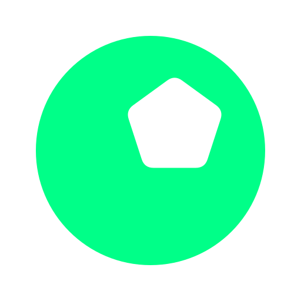

BALL KNOWLEDGE FOOTBALL KNOWLEDGE GAMESDraft World Cup XIs, identify mystery players, simulate brackets, and build a club dynasty in fast browser games made for football obsessives.
Ball Knowledge is a small hub of free, browser-based football knowledge games. No accounts, no downloads — pick a game and start playing straight away.
Browse full World Cup squads and player ratings for every major nation from 2002 to 2026 — positions, overall ratings and the strongest XI for each team, from Brazil 2002 to Argentina 2022.